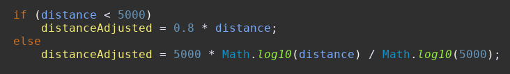
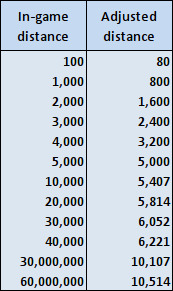
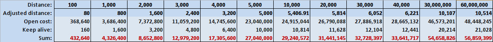
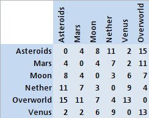

Général
Les Stargates possèdent 3 différentes variantes:
- Universe
- Milkyway
- Pegasus
Chacune a ses avantages et ses inconvénients, mais fonctionnent toutes de la même manière : elles utilisent un ensemble de 7 à 9 chevrons pour se connecter à une autre Stargate. Les Stargates d'Universe requirent l'activation de 9 chevrons pour pouvoir réaliser une connexion depuis un autre type de Stargate. Les Stargates de la Voie Lactée et de Pégase ne requirent que 7 à 8 chevrons repésentant des coordonnées spatiales. En cas de connexion à 8 chevrons, le 7ème chevron correspond à un indicateur de zone permettant d'indiquer le changement de galaxie, tel qu'une connexion entre une Stargate de la Voie Lactée et une de Pégase. En cas de connexion à 9 chevrons, le Point d'Origine peut servir de code d'identification pour une connexion sécurisé (non implémenté dans le mod). Toutes les adresses se terminent par le Point d'Origine (PO) qui a pour information la localisation d'origine de la Stargate appelante.
Dans la série, nous pouvons voir de multiples fois que lorsque une Stargate est en activation un vortex instable se forme, il est communément appelé kawoosh. Dans la série, ce phénomène vaporise tout élément se trouvant être prise dans celui-ci, passant de personnes à des vaisseaux entiers,
cette fonctionnalité a été implantée dans le mod et peut détruire la presque intégralité des blocks du jeu (exception de l'obsidiant et de la bedrock et autres block qui peuvent résister à de la TNT). Dans le mod, le kawoosh possède une dimension de 3 x 3 sur 7 blocks de long, exception de la Porte d'Orlin
avec un rayon de 1 block.


 L'interface est plutôt simple et possède 8 emplacements d'items. Les 4 emplacements de gauche sont conçus pour contenir les différents cristaux de Symboles, l'emplacement du milieu est conçus pour l'Iris,
les emplacements de droite sont pour les condensateur. Les condensateur augmentent la quantité d'énergie maximum que la Stargate peut contenir.
L'interface est plutôt simple et possède 8 emplacements d'items. Les 4 emplacements de gauche sont conçus pour contenir les différents cristaux de Symboles, l'emplacement du milieu est conçus pour l'Iris,
les emplacements de droite sont pour les condensateur. Les condensateur augmentent la quantité d'énergie maximum que la Stargate peut contenir.
Dans la série, la porte mesure environ 6.7 m (22 pieds) de diamètre, dans le mod, elles mesurent approximativement 7.15 blocks de diamètre ; ce qui est plus grand que celle de la série, mais a pour cause les limitations du jeu. Les autres inexactitudes sont soit en cours de travail soit limité par le jeu.
Orlin

Dans la série, nous pouvoir voir un Ancien (nommé Orlin) ayant fait son ascension construire une Stargate miniature dans le sous-sol du Major Carter en utilisant différents matériaux terriens achetés par internet, notamment du titane, du câble, des condensateurs industriels et un grille-pain. Dans la série cette Stargate n'as qu'une utilisation unique, mais le mod lui as donné l'utilité de pouvoir se rendre dans le Nether (avec assez d'alimentation énergétique) en lui donnant un signal redstone, ce qui aura pour conséquence de générer (dans le cas de la première utilisation d'une stargate d'Orlin dans le monde) une Stargate dans le Nether (vous pouvez modifier la quantité d'utilisation de la Stargate dans les configurations du mod). Il est important de noter qu'une activation extérieure de celle-ci compte comme une utilisation ! Afin de retourner dans l'Overworld, il vous suffira d'entrer l'adresse de la Terre (celle de la série) afin de vous rendre à la dernière Stargate d'Orlin utilisé.
Universe

Dans la série, nous savons que les Stargates d'Universe sont les premières générations de Stargates et par conséquence les pires des trois ; elles sont moins durables et possèdent une portée de connexion limité.
Les Stargates d'Universe sont les plus désavantageuses du lot. Elles ont une consommation plus importante, peuvent exploser avec une TNT, ont une rotation d'anneau lente (quand utiliser avec Open Computer), une impossibilité à posséder des condensateurs (configurable dans le mod), et ne possèdent pas de DHD attitré ne permettant donc pas une recharge énergétique par celui-ci. Le seul avantage peut être celui d'utilisé d'Universe Dialer qui peut stocker toutes les adresses en mémoire, vous permettant de vous alléger de ce poids. En terme de progression dans le jeu, elles sont celles qui sont le plus facilement accessibles, car nécessitent moins de naquadah.
Voie Lactée

Les Stargates de la Voie Lactée sont de 2nd générations, crée par les Anciens et consommant moins d'énergie que celles d'Universe, elles peuvent composer plus rapidement grâce à un DHD, mais peuvent aussi réaliser une connexion en réalisant une rotation manuelle de l'anneau (pas encore implémenté dans le mod) rotatif possédant les gravures des différents symboles de la Voie Lactée, dont le symbole oublié d'Aquila (oublié car il n'est présent sur aucun DHD). Le mod n'utilisera pas le symbole lors de la génération de l'adresse de la Stargate. La composition rotative est plus rapide lorsque composé par ordinateur (Open Computer) que celles d'Universe.
Pégase

Les Stargates de Pégase sont de 3ème générations, la plus perfectionnées des 3 avec la particularité de posséder un panneau émetteur de lumière, ils ont également simplifié les glyphes qu’ils utilisaient aux formations d’étoiles réelles au lieu des images qui les représentent comme celles de la Voie Lactée. De plus, ces Stargates utilisent moins d'énergie que celles de la Voie Lactée. Dans le mod, la Stargate de Pégase est celles qui possèdent le meilleure rendement énergétique et la plus rapide composition d'adresse (si utilisé avec Open Computer), avec environs 1 seconde pour activer un chevron contre 10 pour celles de la Voie Lactée.
Cristaux de Symboles

CES CRISTAUX N'AFFECTENT PAS LE FONCTIONNEMENT DE LA STARGATE
Ces cristaux sont uniquement utilisés afin de pouvoir visualisé et récupérer l'adresse de la Stargate concerné dans une page de note, pour utiliser la page pour enregistrer l'adresse vous devez l'insérer dans l'emplacement dans l'interface comme ci-dessous :

Livre de notes et pages
Pour crafter un livre de notes vous devez faire comme ceci :
 Et pour duplique une page écrite, vous pouvez faire comme cela :
Et pour duplique une page écrite, vous pouvez faire comme cela :
 Les pages de notes sont comme les maps tenus dans les mains, Les Symboles sont rangés dans l'ordre que vous devez les activer, de la gauche vers la droite, haut en bas,
si vous voulez combiner les pages ensembles, vous pouvez activerun Livre de notes ce cette manière :
Les pages de notes sont comme les maps tenus dans les mains, Les Symboles sont rangés dans l'ordre que vous devez les activer, de la gauche vers la droite, haut en bas,
si vous voulez combiner les pages ensembles, vous pouvez activerun Livre de notes ce cette manière :


Energie
La Stargate consomme de l'énergie de deux manières :
- Quand la Stargate est ouverte (Coût d'ouverture), consomme uniquement à l'activation.
- Quand la Stargate reste ouverte (Coût de maintient), consomme tout les ticks.
La distance est prise en compte. Cette formule est appliquée à la distance calculée à partir de la distance du bloc :  Il se réduit donc à l’échelle de puissance
- Coût linéaire sous 5000 blocs
- Coût logarythmique au-dessus de 5000 (augmentation plus lente)
The outcome is this adjusted distance:
Le résultat est ajusté par ces distances :
 Le coût de la Stargate augmente avec des distances supérieures à 5 000 blocks. Voici un bref résumé:
 (Résumé de la consommation d’énergie. Le coût de maintien en vie est calculé pour le temps d’ouverture de 20 secondes. Coût d’ouverture par bloc et coût de maintien en vie par bloc et par tick
peut être modifié dans la configuration.)
Cela ne tient toutefois pas compte du décalage de puissance de dimension. Ceci est lu à partir du fichier config/aunis_dimensions.json au chargement du monde. La puissance est calculé par rapport à l'Overworld et peux être changé à tout moment dans le ficher de configuration (Le monde
doit être rechargé). Le décalage est par défault à 0, mais certaines valeurs par défaut sont définies. Voici les compensations en millions de RF (coût d'ouverture uniquement):
